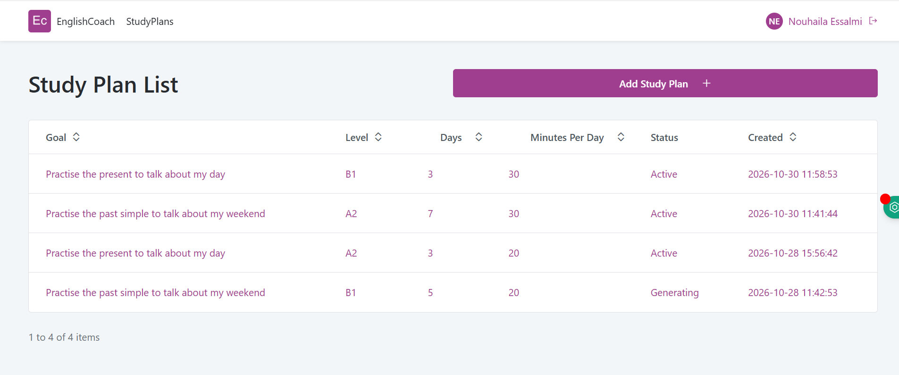
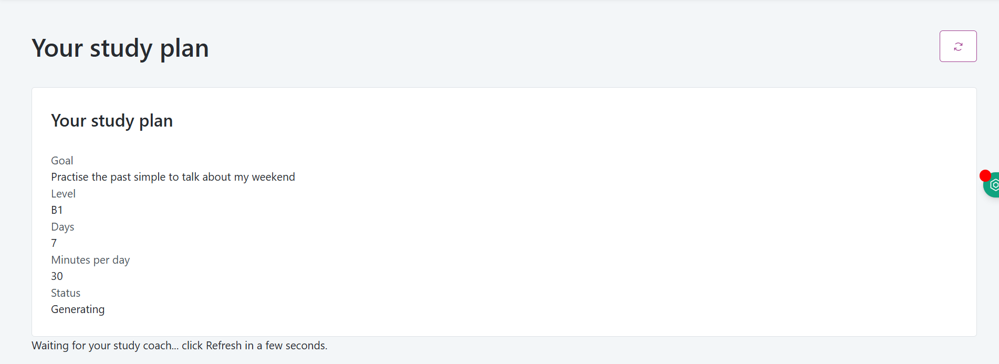
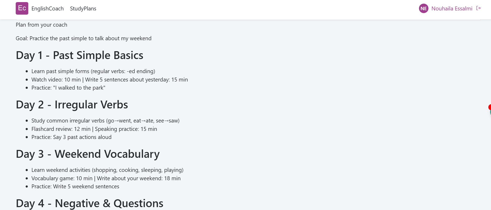
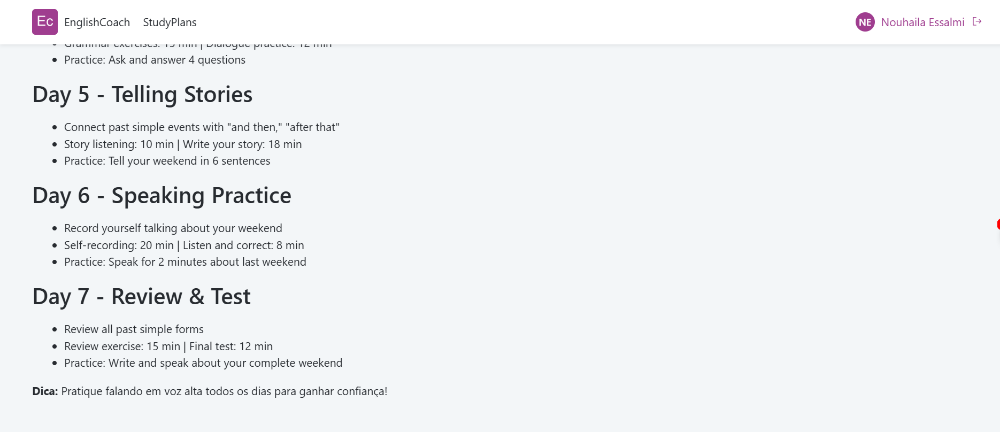
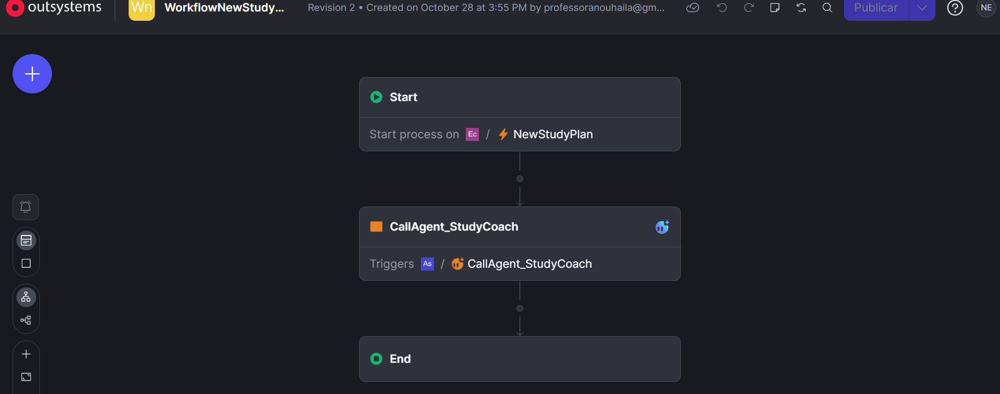

Projeto final do curso de agentes · OutSystems · 2026
Uma app que cria planos de estudo de inglês personalizados. O aluno diz o que quer praticar e quanto tempo tem, e um agente de IA, chamado por um workflow, prepara um plano dia a dia.

Quem aprende inglês sozinho muitas vezes não sabe por onde começar nem como organizar o tempo. No EnglishCoach, o aluno cria um plano de estudo com quatro dados:
A partir daí, o agente StudyCoach escreve um plano completo. Cada dia tem um tema (por exemplo "Irregular Verbs" ou "Speaking Practice"), atividades com o tempo de cada uma e um exercício prático. O plano respeita os minutos que o aluno indicou.
Clica em Add Study Plan e preenche o objetivo, o nível, os dias e os minutos por dia.
O plano é guardado na base de dados com o estado Generating, e a app lança o evento NewStudyPlan.
O WorkflowNewStudyPlan começa sozinho quando recebe o evento. Assim, o aluno não fica à espera com a página bloqueada.
A ação CallAgent_StudyCoach envia os dados ao agente, que devolve o plano dia a dia. O plano fica guardado e o estado passa a Active.
Enquanto o plano é gerado, aparece a mensagem "Waiting for your study coach… click Refresh". Depois de clicar em Refresh, o plano completo aparece no ecrã.




NewStudyPlan) → CallAgent_StudyCoach → End.